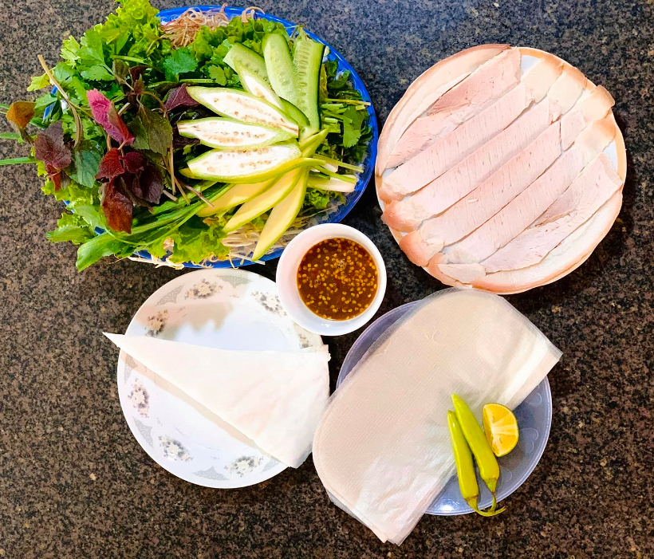
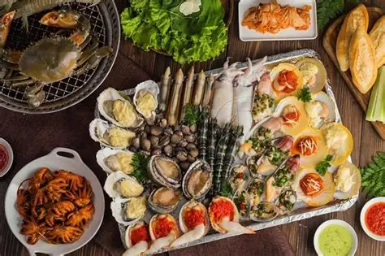

Giới thiệu Ẩm thực Đà Nẵng
Ẩm thực Đà Nẵng mang đậm bản sắc miền Trung với hương vị đậm đà, cay nhẹ và mộc mạc. Không quá cầu kỳ trong cách chế biến, các món ăn nơi đây chú trọng vào sự hài hòa giữa nguyên liệu tươi ngon và gia vị truyền thống.
Mì Quảng – Linh hồn ẩm thực Đà Nẵng

Mì Quảng là món ăn đặc sản nổi tiếng của tỉnh Quảng Nam và thành phố Đà Nẵng, đại diện tiêu biểu cho ẩm thực miền Trung Việt Nam. Món ăn gây ấn tượng bởi sợi mì to, dẹt, thường có màu trắng hoặc vàng nhạt (từ bột gạo pha nghệ). Điểm khác biệt của mì Quảng là nước dùng rất ít, chỉ xâm xấp, được nấu đậm đà từ xương và các loại nhân như tôm, thịt heo, gà, cá lóc, ếch… Giá mì Quảng khá bình dân, phù hợp với nhiều đối tượng: Ở quán bình dân, chợ, gánh hàng: khoảng 20.000 – 30.000 đồng/tô Ở quán ăn nổi tiếng, quán du lịch: khoảng 35.000 – 50.000 đồng/tô Một số nơi có tô đặc biệt (nhiều topping) hoặc không gian sang trọng: có thể 60.000 đồng trở lên
Bánh tráng cuốn thịt heo
Bánh tráng cuốn thịt heo là món đặc sản trứ danh của Đà Nẵng – Quảng Nam, nổi tiếng bởi hương vị tươi mát, hài hòa và cách ăn rất thú vị. Món ăn gồm thịt heo luộc (thường là thịt ba chỉ hoặc thịt hai đầu da – mỡ – nạc cân đối), bánh tráng mỏng và bánh tráng cuốn, ăn kèm rau sống phong phú như xà lách, húng quế, diếp cá, tía tô, dưa leo, chuối chát, khế chua… Điểm nhấn quyết định hương vị là mắm nêm pha đậm đà từ cá cơm, thơm mùi mắm, cay nhẹ và ngọt dịu. Khi ăn, người ta xếp rau và thịt lên bánh tráng, cuốn chặt tay rồi chấm mắm nêm — tạo nên sự kết hợp giữa béo của thịt, tươi của rau, mặn ngọt cay của nước chấm rất khó quên. Giá tham khảo: Quán bình dân: khoảng 40.000 – 60.000 đồng/phần Quán nổi tiếng, phục vụ du lịch: khoảng 70.000 – 100.000 đồng/phần
Hải sản Đà Nẵng
Đà Nẵng là thành phố biển nổi tiếng của miền Trung Việt Nam, được thiên nhiên ưu đãi nguồn hải sản phong phú, tươi ngon quanh năm. Nhờ vị trí giáp biển Đông và có nhiều làng chài truyền thống như Mân Thái, Thọ Quang, Nam Ô…, hải sản tại đây chủ yếu được đánh bắt trong ngày, giữ trọn vị ngọt tự nhiên. Hải sản Đà Nẵng rất đa dạng, từ các loại quen thuộc như tôm, cua, ghẹ, mực, cá biển, đến các loại cao cấp như tôm hùm, cá mú, bào ngư. Không chỉ nổi bật về độ tươi, hải sản nơi đây còn hấp dẫn bởi cách chế biến đậm đà hương vị miền Trung, phổ biến nhất là hấp, nướng, xào sả ớt, rang me hay nấu lẩu. Một điểm đặc trưng khác của hải sản Đà Nẵng là giá cả tương đối hợp lý, phù hợp với nhiều đối tượng, từ quán ăn bình dân đến nhà hàng ven biển. Du khách có thể dễ dàng thưởng thức hải sản tại chợ, quán địa phương hoặc các nhà hàng lớn với trải nghiệm ẩm thực phong phú. 👉 Nhìn chung, hải sản Đà Nẵng không chỉ là món ăn mà còn là nét đặc sắc trong văn hóa ẩm thực, góp phần tạo nên sức hút riêng của thành phố biển năng động và thân thiện này.
Đặc trưng của ẩm thực Đà Nẵng
- Hương vị đậm đà, cay nhẹ đặc trưng miền Trung
- Nguyên liệu tươi ngon, dễ tìm
- Giá cả hợp lý, phù hợp với nhiều đối tượng
- Món ăn mang tính truyền thống và gần gũi